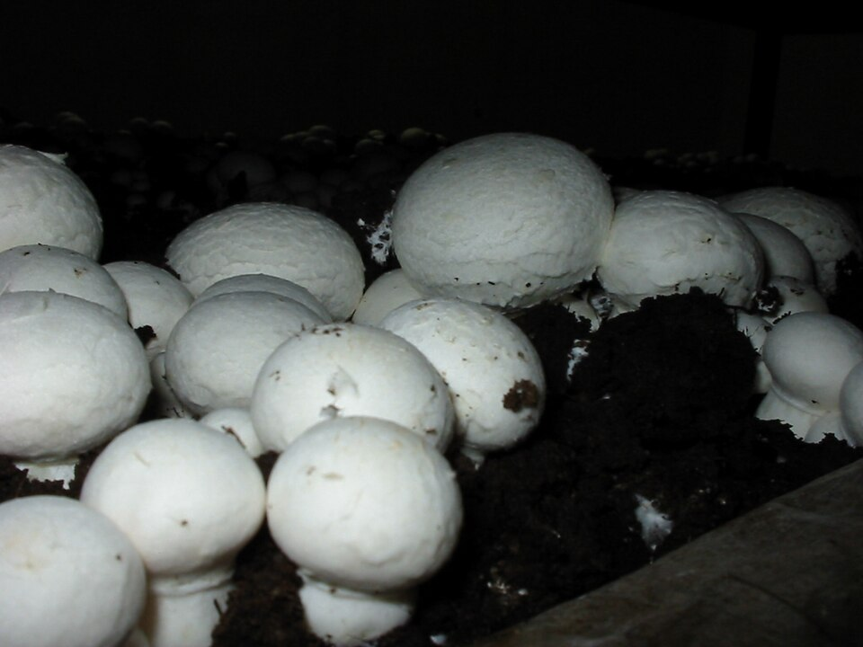
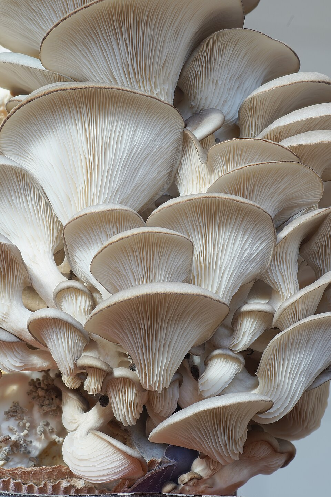
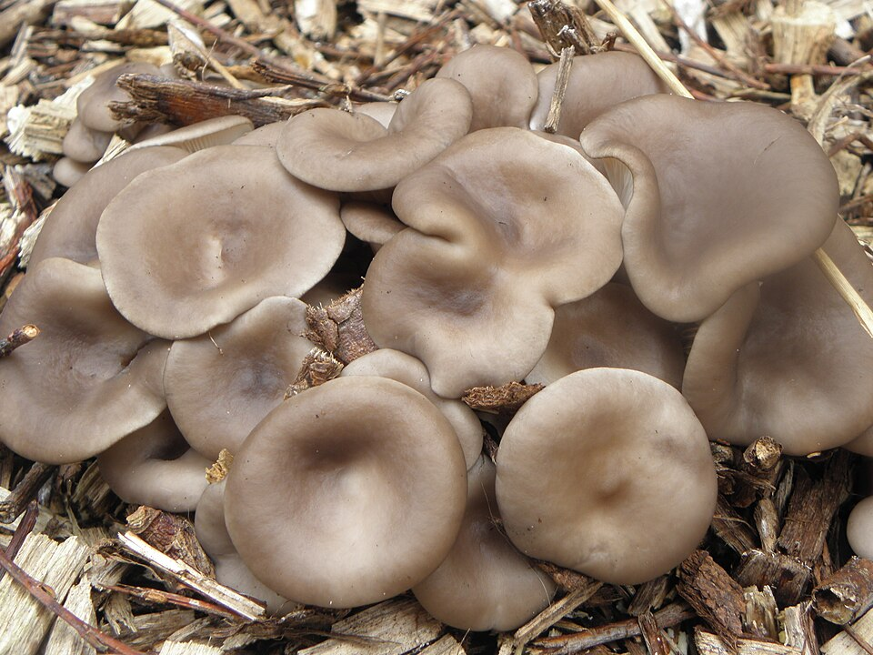
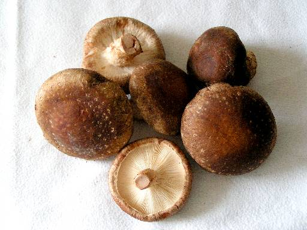
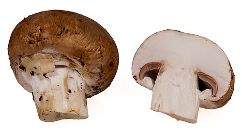

Button
Mild and tender. A versatile choice for sautés, soups, and everyday cooking.
Organic mushroom farming
Discover four delicious varieties of organic mushrooms, grown with sustainable practices and harvested for farm-to-table freshness.


Our farm
At Mabaagro LLP, we pair traditional farming knowledge with modern growing facilities to cultivate flavorful organic mushrooms.
Our harvest
Four varieties for everything from a quick sauté to a weekend grill.

Mild and tender. A versatile choice for sautés, soups, and everyday cooking.
Delicate and silky. Tear into strips for stir-fries or pan-fry until golden.

Deeply savory. Add to broths, noodles, and rice dishes for a rich umami flavor.

Firm and meaty. The broad caps hold up well on the grill or in a sandwich.
From horticulture to hospitality, meet the organizations we work with.
Get in touch
Ask us about availability, placing an order, or working with Mabaagro LLP.